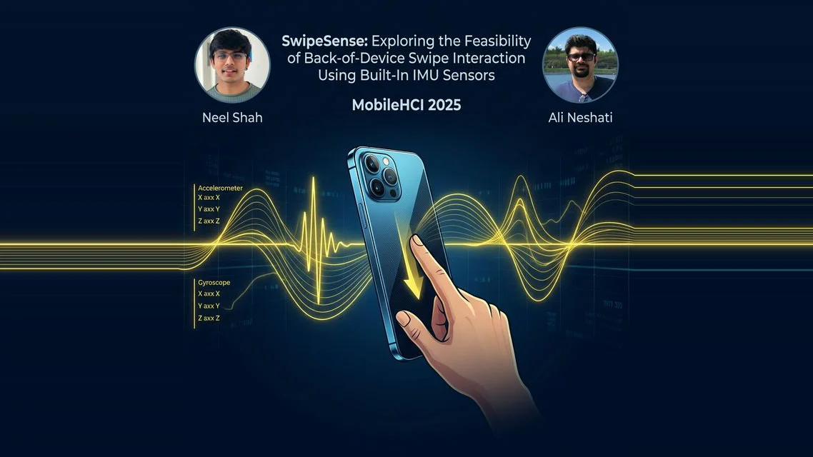

RIDGE Presented at IEEE CoG 2026 — Madrid, Spain
Congratulations, Al Muqshith Mohammed Shifan!

MSc Thesis Defended — Second UXID Lab Graduate
Congratulations, Yasaman Basti!

MSc Thesis Defended — Nominated for Best Thesis Award
Congratulations, Sakil Sarker!

Best Undergraduate Thesis Award 2026
Congratulations, Alyesha Singh!


Welcome to the UXID Lab
I am an Assistant Professor in Computer Science at Ontario Tech University, where I lead the UXID Lab (User Experience and Interaction Design). I earned my PhD from the University of Manitoba under the supervision of Dr. Pourang Irani and completed a postdoctoral fellowship at the University of Waterloo with Dr. Daniel Vogel and Dr. Jian Zhao. My research focuses on designing and evaluating digital and intelligent systems that better support human capabilities, decision-making, usability, and accessibility across diverse technological contexts.
My research spans Human-Computer Interaction (HCI) and Human-AI Interaction, with an emphasis on mobile, wearable, and emerging technologies. I study user needs and interaction constraints, and design novel interaction techniques and AI-assisted systems that enhance human performance and support effective, trustworthy integration of AI into everyday computing.
Recent News
- #New Two poster papers accepted at UIST 2026 in Detroit: "CiteLen: In-Situ Multi-Lens Citation Analysis for Scholarly Reading" and "CTATutor: From Instructor-Guided Computational Thinking Blueprints to Adaptive Algorithm Tutoring". Congratulations to Yasaman and Zeyuan!
- # Our paper "RIDGE: State-Conditioned Reward Blending for Behavioral Coverage in Deep RL Game Agents" has been accepted for oral presentation at the IEEE Conference on Games (CoG 2026) in Madrid, Spain. Congratulations to Al Muqshith Mohammed Shifan and Kevin Christopher Chua!
- # Congratulations to Yasaman Basti on successfully defending her MSc thesis, "CiteView: In-Situ Citation Sensemaking for Scholarly Reading" — the second graduate student from the UXID Lab to complete her degree this summer!
- # Congratulations to Sakil Sarker on successfully defending his MSc thesis — the first graduate student from the UXID Lab to complete his degree! His thesis has been nominated for the Best Thesis Award.
- # Congratulations to Sakil Sarker! Our paper "CoRead: Using Implicit Behavioural Signals for Mixed-Initiative AI Support in Collaborative Academic Reading" has been accepted at ICMI 2026 in Italy.
- # Shimon presented our paper "Exploring Above-Neck Unimanual Swipe Gestures for Off-Device Earable Interaction" at GI '26 in Waterloo, Ontario.
-
#
For the third year in a row, a UXID Lab student has received the Best Undergraduate Thesis Award.
Congratulations to Alyesha Singh, Kershan Arulneswaran, Rania Rejdal, and Alex Lowe on successfully defending their theses.
Awards & Honours
First MSc Thesis Defended
Sakil Sarker — nominated for the Best Thesis Award
Best Undergraduate Thesis Award
Alyesha Singh — Ontario Tech University, Computer Science
Three Years in a Row
A UXID Lab student has won the Best Undergraduate Thesis Award every year since 2024
Honorable Mention Awards
Paper awards at ACM CHI 2019 and MobileHCI 2021
Join the Lab
-
Now Recruiting
Current Openings — Multiple Master's & PhD Positions
I am actively recruiting multiple Master's (MSc) and PhD students to join the UXID Lab for Winter 2027 / Fall 2027. If you are passionate about Human-Computer Interaction, Human-AI Interaction, or mobile & wearable technologies, I would love to hear from you. Please review my research areas first, then email me at ali dot neshati at ontariotechu dot ca with your CV and academic transcript(s). Well-informed applications that clearly align with my work are prioritized.
-
Admission Requirements
For detailed admission requirements, please refer to the university's official page. Prospective students who have reviewed these requirements are invited to express their interest by emailing me at ali dot neshati at ontariotechu dot ca. Please ensure your email includes both your (i) CV and (ii) academic transcript(s).
Important Dates
IMWUT / UbiComp 2026 - Submission Deadline
Next quarterly submission deadline for the Proceedings of the ACM on Interactive, Mobile, Wearable and Ubiquitous Technologies (IMWUT).
VRST 2026 Conference - Sendai, Japan
ACM Symposium on Virtual Reality Software and Technology (Nov 16-18, 2026).
TEI 2027 - Papers Deadline
Paper and Pictorial submission deadline for the ACM Conference on Tangible, Embedded and Embodied Interaction (Lisbon).
IUI 2027 - Paper Deadline
Full paper submission deadline for the ACM Conference on Intelligent User Interfaces (abstracts due Aug 13; Helsinki).
CHI 2027 - Paper Deadline
Full paper submission deadline for the ACM CHI Conference on Human Factors in Computing Systems.
Publications

CiteLen: In-Situ Multi-Lens Citation Analysis for Scholarly Reading
Adjunct Proceedings of the 39th Annual ACM Symposium on User Interface Software and Technology (UIST '26), PostersDetroit, Michigan, USA

CTATutor: From Instructor-Guided Computational Thinking Blueprints to Adaptive Algorithm Tutoring
Adjunct Proceedings of the 39th Annual ACM Symposium on User Interface Software and Technology (UIST '26), PostersDetroit, Michigan, USA

RIDGE: State-Conditioned Reward Blending for Behavioral Coverage in Deep RL Game Agents
Proceedings of the IEEE Conference on Games (CoG '26), Oral PresentationSeptember 1–4, 2026, Madrid, Spain

CoRead: Using Implicit Behavioural Signals for Mixed-Initiative AI Support in Collaborative Academic Reading
Proceedings of the 28th ACM International Conference on Multimodal Interaction (ICMI '26)Naples, Italy

Exploring Above-Neck Unimanual Swipe Gestures for Off-Device Earable Interaction
Proceedings of Graphics Interface 2026 (GI '26)Article No.: 13, 21 pages · June 09–12, 2026, Kitchener–Waterloo, Ontario, Canada

HamRaz: A Culture-Based Persian Conversation Dataset for Person-Centered Therapy using LLM Agents
Proceedings of the First on Natural Language Processing and Language Models for Digital HumanitiesPages 101 - 108

SwipeSense: Exploring the Feasibility of Back-of-Device Swipe Interaction Using Built-In IMU Sensors
Proceedings of the ACM on Human-Computer Interaction, Volume 9, Issue 5Article No.: MHCI030, Pages 1 - 24

PaperPal: An AI-Powered Platform for Collaborative Reading and Discussion
CUI '25: Proceedings of the 7th ACM Conference on Conversational User InterfacesArticle No.: 19, Pages 1 - 6

CitePeek: Contextual Citation Exploration Within Research Papers
CUI '25: Proceedings of the 7th ACM Conference on Conversational User InterfacesArticle No.: 20, Pages 1 - 7

Large Language User Interfaces: Voice Interactive User Interfaces powered by LLMs
Intelligent Systems Conference, 2024 - Springer, pp 639–655
Exploring Uni-manual Around Ear Off-Device Gestures for Earables
Proceedings of the ACM on Interactive, Mobile, Wearable and Ubiquitous Technologies, Volume 8, Issue 1Article No.: 3, Pages 1 - 29

Exploring Interactive Color Palettes for Abstraction-Driven Exploratory Image Colorization
CHI '24: Proceedings of the 2024 CHI Conference on Human Factors in Computing SystemsArticle No.: 146, Pages 1 - 16

In-vehicle Performance and Distraction for Midair and Touch Directional Gestures
CHI '23: Proceedings of the 2023 CHI Conference on Human Factors in Computing SystemsArticle No.: 316, Pages 1 - 13

De-Stijl: Facilitating graphics design with interactive 2D color palette recommendation
CHI '23: Proceedings of the 2023 CHI Conference on Human Factors in Computing SystemsArticle No.: 122, Pages 1 - 19

Interaction Region Characteristics for Midair Barehand Targeting on a Television
CHI EA '23: Extended Abstracts of the 2023 CHI Conference on Human Factors in Computing SystemsArticle No.: 180, Pages 1 - 7

Slide4n: Creating presentation slides from computational notebooks with human-ai collaboration
CHI '23: Proceedings of the 2023 CHI Conference on Human Factors in Computing SystemsArticle No.: 364, Pages 1 - 18

EdgeSelect: Smartwatch Data Interaction with Minimal Screen Occlusion
ICMI '22: Proceedings of the 2022 International Conference on Multimodal InteractionPages 288 - 29

Data visualization and interaction on smartwatch small screens
University of Manitoba, 2022
Understanding and Adapting Bezel-to-Bezel Interactions for Circular Smartwatches in Mobile and Encumbered Scenarios
Proceedings of the ACM on Human-Computer Interaction, Volume 6, Issue MHCIArticle No.: 201, Pages 1 - 28

Crowdsourcing vs laboratory-style social acceptability studies? Examining the social acceptability of spatial user interactions for head-worn displays
CHI '18: Proceedings of the 2018 CHI Conference on Human Factors in Computing SystemsPaper No.: 310, Pages 1 - 7

BezelGlide: Interacting with Graphs on Smartwatches with Minimal Screen Occlusion
CHI '21: Proceedings of the 2021 CHI Conference on Human Factors in Computing SystemsArticle No.: 501, Pages 1 - 13

SF-LG: Space-Filling Line Graphs for Visualizing Interrelated Time-series Data on Smartwatches
MobileHCI '21: Proceedings of the 23rd International Conference on Mobile Human-Computer InteractionArticle No.: 5, Pages 1 - 13

Using Guessability Framework: Age-related Differences in Hand Gesture Interaction
AH '20: Proceedings of the 11th Augmented Human International ConferenceArticle No.: 24, Pages 1 - 2

Eyes-Free Graph Legibility: Using Skin-Dragging to Provide a Tactile Graph Visualization on the Arm
AH '20: Proceedings of the 11th Augmented Human International ConferenceArticle No.: 1, Pages 1 - 8

G-Sparks: Glanceable Sparklines on Smartwatches
GI '19: Proceedings of the 45th Graphics Interface ConferenceArticle No.: 23, Pages 1 - 9

An Analytic Model for Time-Efficient Personal Hierarchies
CHI '19: Proceedings of the 2019 CHI Conference on Human Factors in Computing SystemsPaper No.: 368, Pages 1 - 11

Smart Home Interactions for People with Reduced Hand Mobility Using Subtle EMG-Signal Gestures
Studies in Health Technology and Informatics, Volume 257: Improving Usability, Safety and Patient Outcomes with Health Information Technology, Pages 436 - 443
Challenges in Displaying Health Data on Small Smartwatch Screens
Studies in Health Technology and Informatics, Volume 257: Improving Usability, Safety and Patient Outcomes with Health Information Technology, Pages 325 - 332
Performer vs. Observer: Whose Comfort Level Should We Consider When Examining the Social Acceptability of Input Modalities for Head-Worn Display?
VRST '18: Proceedings of the 24th ACM Symposium on Virtual Reality Software and TechnologyArticle No.: 10, Pages 1 - 9

Is Really NACK Protocol Secure to Be Employed in MANETs?
2014 IEEE 17th International Conference on Computational Science and EngineeringOur Team

Graduate Students

Mohammad Zawad
Master's(Jan 2026)
Researching data visualization and interaction on smartwatches.

Farnaz Mirnezami
Master's(Sep 2025)
Master's student participating in research projects.

Aron-Seth Cohen
Master'sResearching HCI with a focus on interaction design and usability in complex systems.
Kevin Chua
Master's(May 2026 – May 2028)
Master's student participating in research projects.

Sadnima Amin Chowdhury
Master's(Sep 2026)
Master's student participating in research projects.
Undergraduate Students

Sevara Omonova
(2026 - 2027)
Undergraduate student participating in research projects.

Jugal Patel
(2026 - 2027)
Undergraduate student participating in research projects.
Alumni

Sakil Sarker
Master's(Graduated Summer 2026)
Nominated — Best Thesis Award (2026)

Yasaman Akhoondzadeh
Master's(Graduated Summer 2026)

Alyesha Singh
Undergraduate(2025 - 2026)
Undergrad Thesis Award (2026)

Rania Rejdal
Undergraduate(2025 - 2026)
Alex Lowe
Undergraduate(2025 - 2026)

Kershan Arulneswaran
Undergraduate(2025 - 2026)

Neel Shah
UndergraduateUndergrad Thesis Award (2025)

Aiju Kinoshita
Undergraduate(2024 - 2025)

Farees Siddiqui
Undergraduate(2024)

Nicholas Kissoon
Undergraduate(2024)

David Long
Undergraduate(2024)

Syed Mekael Wasti
Undergraduate(2023 - 2024)
Undergrad Thesis Award (2024)

Reese Dominguez
Undergraduate(2023 - 2024)
Teaching
Ontario Tech University

- CSCI 4610: Artificial Intelligence (W2027)
- CSCI 3101: Mobile Devices (F2024, F2025, F2026)
- CSCI 6720G: Advanced Topics in Information Science (graduate course) (F2026)
- CSCI 5750G: Information Visualization (graduate course) (W2026)
- CSCI 4200: Advanced Mobile Development (W2026)
- CSCI 7589G: User Interface Technologies (graduate course) (W2025)
- CSCI 4620: Human-Computer Interaction (F2023, F2024, F2025, W2027)
- CSCI 2040: Software Systems Design (W2024)
University of Waterloo

- Winter 2023: CS 449 - Human-Computer Interaction
University of Manitoba

- Comp 1020: Introductory Computer Science II (W2022, F2020)
- Comp 2150: Object Orientation (W2022, S2021, W2021, S2020)
- Comp 1010: Introductory Computer Science I (F2021)